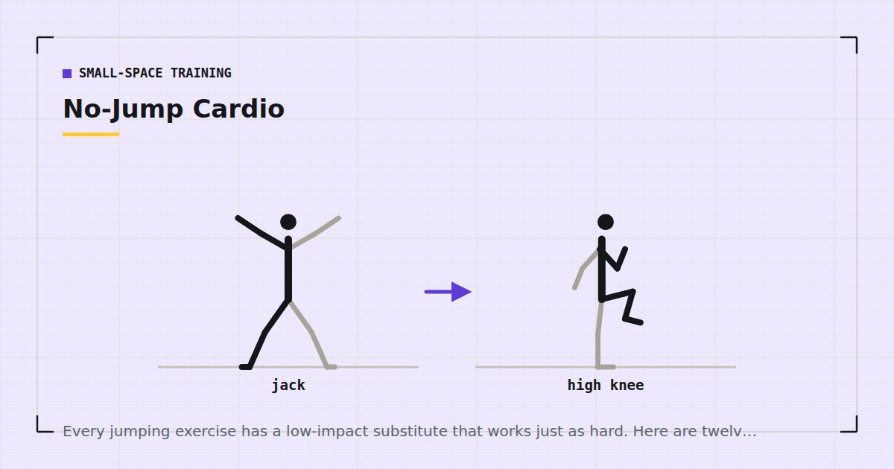

Small-Space Training
No-Jump Cardio: 12 Quiet Alternatives to Burpees
Every jumping exercise has a low-impact substitute that works just as hard. Here are twelve of them, plus how to build a session that stays genuinely quiet.

Conditioning works by making your cardiovascular system work hard for sustained or repeated periods. Jumping is a convenient way to get there without equipment, because launching your bodyweight off the floor recruits a lot of muscle quickly.
Convenient is not the same as necessary. If you live above someone, or train while a child sleeps, or simply have a floor that transmits every landing, you can drop impact entirely and keep the training effect.
Why impact is not the mechanism
What raises your heart rate is the metabolic demand of the muscle you are using. Three ways to create that demand without leaving the floor:
Recruit more muscle at once. Movements involving both the upper and lower body simultaneously drive heart rate up quickly regardless of impact.
Extend the time under tension. Continuous movement with no pause at either end of the range is considerably harder than it looks.
Shorten the rest. Incomplete recovery between efforts keeps the heart rate elevated.
Interval training built on any of these produces documented improvements in cardiorespiratory fitness.1 The intensity is what matters, not how you reached it.
The twelve exercises
1. Fast step-back lunge. Step back, drop the knee, drive up, alternate. Brisk pace, feet never leaving the ground. Replaces jump lunges.
2. Continuous squat. Squat and stand with no pause at either end. The continuity is what makes it hard — most people rest at the top without noticing.
3. Squat to reach. A bodyweight squat followed by reaching both arms overhead. Adding the upper body raises heart rate substantially for very little extra effort.
4. Lateral skater step. Step wide to one side, trailing leg crossing behind, then reverse. Same pattern as a skater jump without the flight phase.
5. Slow long mountain climber. From a push-up position, draw one knee toward the chest and return under control. Slower and longer than the usual frantic version, which increases the core demand and removes the drumming noise.
6. Step-back burpee. A burpee with the feet stepped back and forward rather than jumped, and no jump at the top. Retains the full-body demand.
7. Fast standing march. Knees to hip height, arms swinging, at pace. Replaces high knees, one foot always down.
8. Bear crawl. On hands and feet with knees just off the floor, moving forward and back. Demanding, quiet, and needs surprisingly little space.
9. Standing side step with overhead reach. Step side to side while reaching the arms overhead. Replaces jumping jacks almost exactly.
10. Sit-to-stand, continuous. Stand from a chair and sit back down without pausing. Deceptively hard at pace and accessible to almost everyone.
11. Push-up to shoulder tap. One push-up, then a tap to each shoulder. Full-body demand without the drop and jump of a burpee.
12. Stair climbing. If you have stairs, the single most effective quiet conditioning tool available — see stair workouts.
The substitution table
Use this to convert any HIIT routine you find elsewhere into a no-jump version.
| Instead of | Do |
|---|---|
| Burpee | Step-back burpee, or push-up to shoulder tap |
| Jump squat | Continuous squat with a 3-second descent |
| Jumping jack | Standing side step with overhead reach |
| High knees | Fast standing march |
| Jump lunge | Fast step-back lunge |
| Box jump | Step-up with a pause at the top |
| Skater jump | Lateral skater step |
| Mountain climber (fast) | Slow long-reach mountain climber |
| Skipping / jump rope | Stair climbing, or bear crawl |
| Tuck jump | Continuous sit-to-stand |
Intensity is a physiological state, not a movement pattern. You can reach it with both feet on the floor.
A 20-minute no-jump session
Two minutes of easy marching to warm up. Then five exercises, forty seconds work and twenty seconds rest, four rounds.
- Fast step-back lunge
- Continuous squat to reach
- Push-up to shoulder tap
- Lateral skater step
- Slow long mountain climber
One minute between rounds. The full version with progressions is in the 20-minute no-jump HIIT workout.
Two or three sessions a week, not on consecutive days. This competes for recovery with strength training, so alternate rather than stacking — see the weekly home workout schedule.
Making it genuinely quiet
Removing jumps handles most of the noise. Four things handle the rest:
Train near a supporting wall. Floors transmit most vibration at the centre of a span. Moving your mat nearer a wall is measurably quieter for free.
Put something under your hands as well as your feet. Mountain climbers and plank work drive repeated force through the palms, and hands on a bare floor are a surprising amount of the noise.
Use a thick, dense mat. For impact noise, mass and density matter more than surface texture — which mats actually help is covered in exercise mats for noise reduction.
Mind the hour. The same noise at 7am and 11pm are different social problems, whatever a decibel meter says. The wider approach is in quiet home workouts.
A note on joints
Low-impact is not the same as low-load, and it is worth being precise about that.
Removing impact reduces peak forces through the ankles, knees and hips, which is genuinely useful if those joints are the reason you stopped running. It does not make the exercises easy, and it does not mean nothing can be aggravated — a fast step-back lunge still loads the knee substantially.
If you have a diagnosed joint condition, speak to a physiotherapist about which movements suit you rather than assuming that no-jump means no-risk. And stop with any sharp joint pain, as distinct from muscular burning, which is expected.
Progressing no-jump conditioning
Low-impact work has one genuine disadvantage over jumping: it is easier to cheat. A jump squat is self-policing, because you either leave the floor or you do not. A continuous squat can quietly become a comfortable squat with a pause you have stopped noticing.
That makes deliberate progression more important here than in a session built on impact. Four ways to do it, in the order they are worth using.
Shorten the rest before lengthening the work. Moving from forty seconds on and twenty off to forty-five and fifteen is a larger jump in difficulty than adding ten seconds to both. Rest is where the recovery happens, so removing it raises the average intensity across the whole session.
Add a round rather than a sixth exercise. Five movements covering the whole body is already enough variety for a twenty-minute session. A sixth just reduces how many rounds you can complete, which lowers the total work at each movement.
Slow the eccentric on the strength-biased movements. A three-second descent on the squat and the lunge makes them considerably harder without changing the pace of the session or adding noise.
Use the talk test to check you are actually working. During a work interval you should be able to get out a few words but not a full sentence. Mayo Clinic describes this as the practical marker of vigorous intensity,4 and it needs no equipment. If you can hold a conversation, the interval is not vigorous, whatever the exercise list says.
Run the same session for at least six weeks before changing it. Rotating exercises weekly removes your ability to tell whether the rest periods are getting easier, which is the only feedback this format gives you.
Where to go next
For the complete approach to training quietly, see quiet home workouts. For an apartment-specific interval session, see apartment-friendly HIIT.
Frequently asked questions
What cardio can I do without jumping?
Fast step-back lunges, continuous squats, lateral skater steps, bear crawls, fast standing marches, step-back burpees and stair climbing all raise heart rate substantially with both feet staying in contact with the floor.
Is no-jump cardio as effective as jumping?
Yes, provided the effort is equivalent. What drives adaptation is the metabolic demand of the muscle you are using, not the impact. Low-impact substitutes reach the same intensity by recruiting more muscle, extending time under tension or shortening rest.
What can I do instead of burpees?
A step-back burpee, where the feet step rather than jump and there is no jump at the top, keeps almost all of the full-body demand. A push-up to shoulder tap is the quieter alternative if even that is too much.
How do I do cardio without annoying my neighbours?
Remove all jumping, train nearer a supporting wall rather than the middle of the room, put a thick mat under both your hands and your feet, and consider the hour as much as the volume.
Is low-impact cardio easier on your joints?
It reduces peak forces through the ankles, knees and hips, which helps if those joints are why you stopped running. It does not make the exercises easy or risk-free — a fast step-back lunge still loads the knee substantially.
Sources and further reading
- Wu ZJ, Wang ZY, Gao HE, Zhou XF, Li FH. “Impact of high-intensity interval training on cardiorespiratory fitness, body composition, physical fitness, and metabolic parameters in older adults: A meta-analysis of randomized controlled trials.” Experimental Gerontology, 2021;150:111345. PubMed.
- World Health Organization. WHO Guidelines on Physical Activity and Sedentary Behaviour. 2020.
- NHS. Physical activity guidelines for adults aged 19 to 64.
- Mayo Clinic. Exercise intensity: How to measure it.
Comments
Comments are not enabled yet. Add a hosted comment embed (Disqus, Commento, Giscus) inside this container when you are ready.